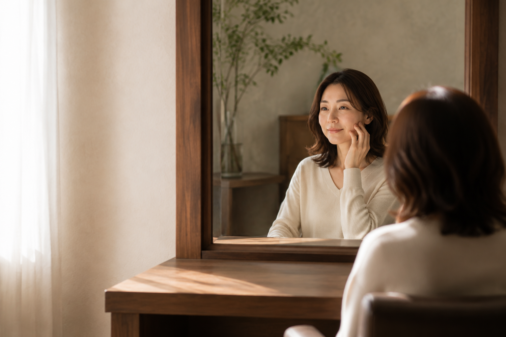
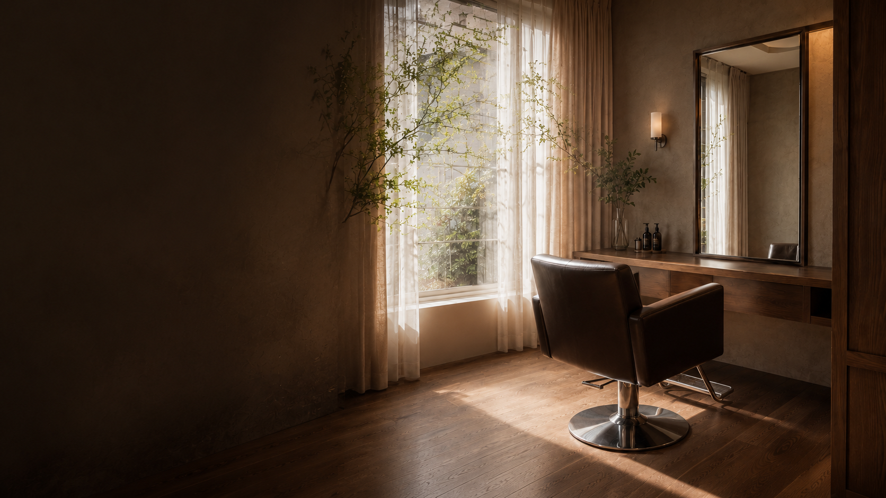
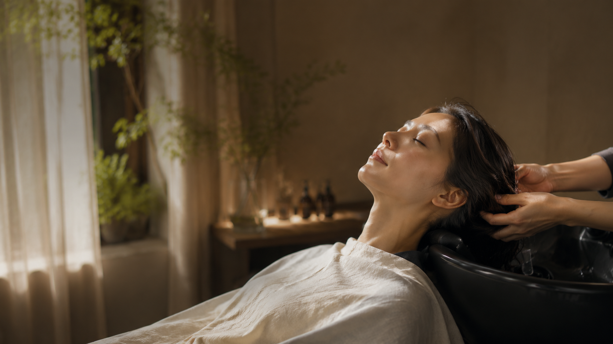
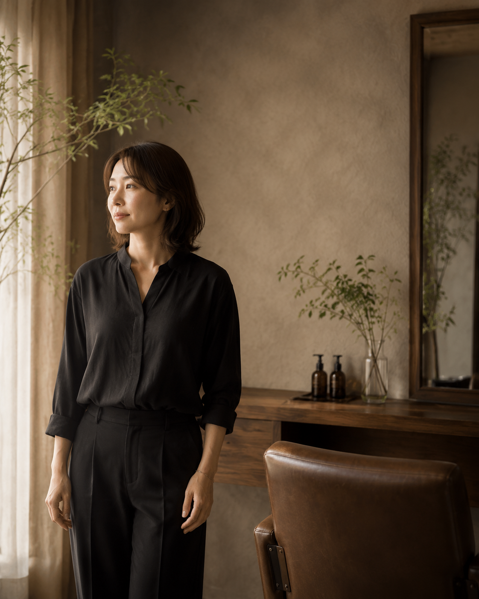
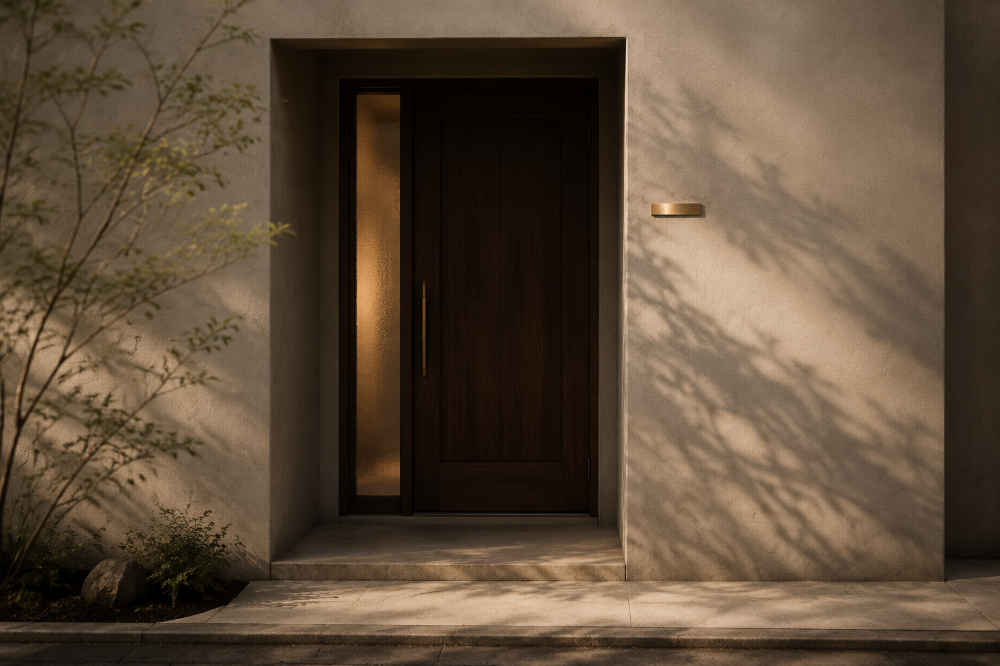
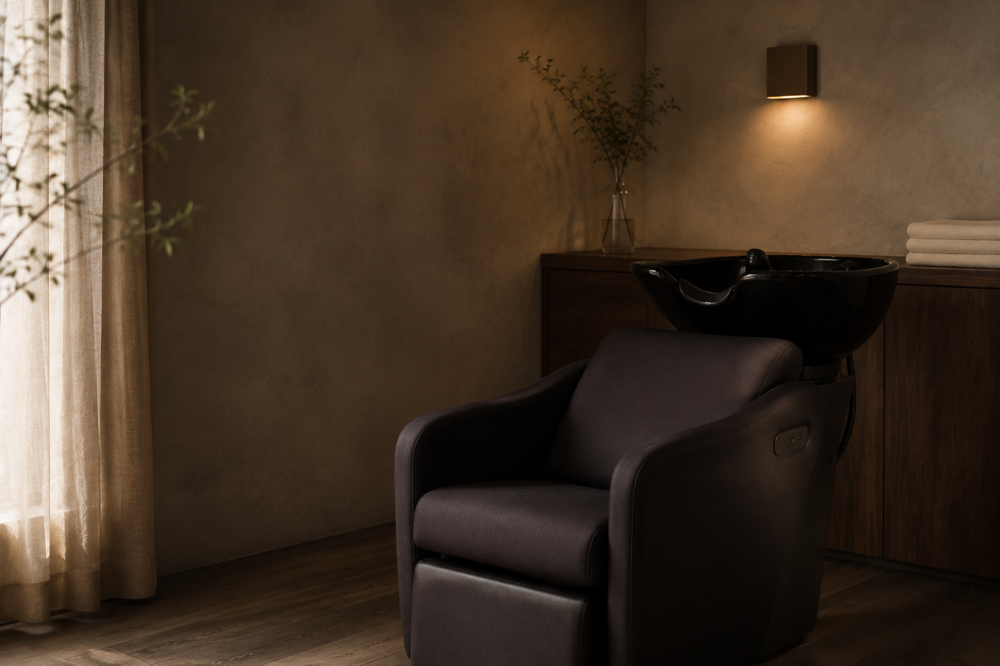
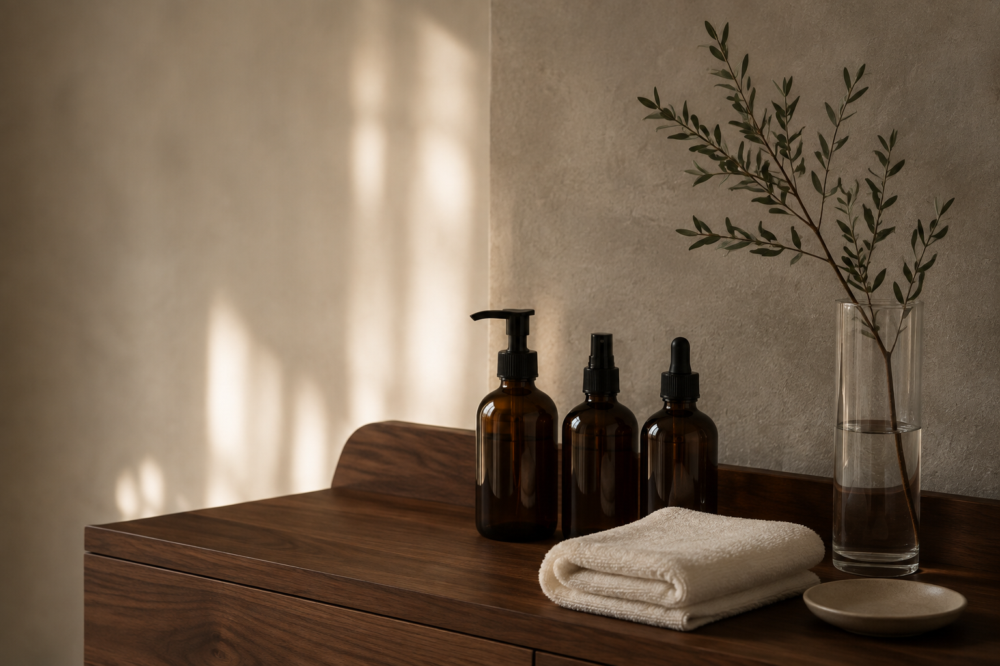

ARRIVAL
静かな個室で、席へご案内。
PRIVATE HAIR SALON / OMOTESANDO
髪を整える時間まで、誰かに気を遣わなくていい。
表参道にある、一席だけの完全予約制プライベートサロン。
日々、誰かのために頑張っているあなたへ。
ここは、髪を整え、自分をゆるめる場所。
髪を整えることは、自分を大切にする時間。
一人の時間を取り戻し、明日を軽やかに迎えるために。

CONCEPT
Un Jour（アンジュール）は、表参道の静かな場所にある
一席だけのプライベートヘアサロンです。
今の気分と心にきちんと向き合い、
あなた自身の余白を取り戻していきます。

EXPERIENCE
静かな個室で、席へご案内。
丁寧なヒアリングで、想いの背景まで伺います。
髪質や性格に合わせた、最適なケアをご提案。
髪を整えながら、ゆったり自分に還る時間。
明日からのお手入れ方法を分かりやすくお伝えします。


STYLIST
美容師歴15年。都内サロン勤務を経て、Un Jourをオープン。
お客様一人ひとりのライフスタイルに寄り添い、
その人らしい美しさを引き出すことを大切にしています。
STYLE COLLECTION
FIRST VISIT GUIDE
一席だけの空間で、30代・会社員
周りを気にせずゆっくり
過ごせるのが嬉しいです。
各種クレジットカード・交通系ICをご利用いただけます。
専用駐車場はございません。近隣のコインパーキングをご利用ください。
完全貸切ですので、小さなお子様と一緒にご来店いただけます。
カット約90分、カラーを含むメニューは約150分が目安です。
VISIT UN JOUR



ACCESS
Un Jour（アンジュール）一人の時間を取り戻す、ホテルのような美容室。